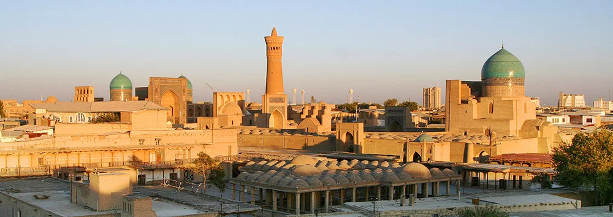

Buxoro
Buxoro – YuNESKO merosi ro‘yxatidagi qadimiy me’moriy yodgorliklari bilan mashhur shahar.
360° Ko‘rish

Samarqand
Samarqand – Registon majmuasi va Shohizinda yodgorliklari bilan dunyoga mashhur.
360° Ko‘rish_01.jpg)
Toshkent
Toshkent – zamonaviy va tarixiy uyg‘unlashgan poytaxt, TV minorasi bilan mashhur.
360° Ko‘rish